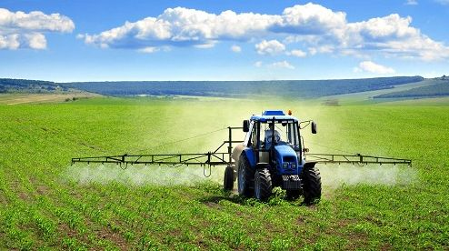

Solusi Terbaik untuk Masa Depan Pertanian.
Kami berkomitmen untuk membantu petani, penyuluh pertanian, dan pemangku kepentingan lainnya dalam mengadopsi teknologi terkini dan praktik terbaik untuk meningkatkan produktivitas, efisiensi, dan keberlanjutan pertanian.
Pertanian modern telah membawa revolusi signifikan dalam produksi makanan, dengan teknologi canggih, penggunaan data, dan praktik berkelanjutan yang memungkinkan petani untuk menghasilkan hasil yang lebih besar, lebih berkualitas, dan lebih ramah lingkungan.
Dengan peralatan pertanian yang terkini dan inovasi seperti pertanian vertikal, irigasi pintar, dan penggunaan drone, pertanian modern memungkinkan efisiensi yang lebih tinggi dalam pengelolaan lahan dan sumber daya. Ini tidak hanya mendukung ketahanan pangan global, tetapi juga mempromosikan kesejahteraan petani dan menjaga alam kita.
Salah satu aspek utama pertanian modern adalah penggunaan teknologi tinggi dalam pengelolaan pertanian. Teknologi seperti sensor tanah, drone, dan traktor otonom memungkinkan petani untuk mengoptimalkan penggunaan sumber daya seperti air dan pupuk. Data yang dikumpulkan dari perangkat ini juga membantu petani membuat keputusan yang lebih cerdas tentang kapan dan bagaimana menanam, sehingga meningkatkan produktivitas tanaman.
Selain itu, pertanian modern juga berfokus pada keberlanjutan lingkungan. Ini mencakup praktik pertanian berkelanjutan yang mengurangi dampak negatif terhadap lingkungan, seperti penggunaan pestisida kimia yang berlebihan. Konsep pertanian organik dan permaculture semakin mendapatkan perhatian, mengutamakan tanah yang sehat, biodiversitas, dan praktik pertanian yang ramah lingkungan.
Kami merekomendasikan situs web pemerintah yang menyediakan informasi terbaru tentang kebijakan pertanian, bantuan, dan sumber daya pendukung petani.
Klik disini untuk melihat situs web pemerintah
| Penelitian/Inovasi | Hasil | Deskripsi | |
|---|---|---|---|
| Produktivitas | Kualitas | ||
| Varian Tanaman Unggul | Lebih tinggi | Lebih baik | Pengembangan varian tanaman yang tahan terhadap penyakit. |
| Penggunaan Drone | Memantau pertanian secara efisien | N/A | Penggunaan drone untuk pemantauan dan pengendalian hama. |
| Irigrasi Otomatis | Optimal | N/A | Sistem irigasi otomatis yang mengoptimalkan penggunaan air. |